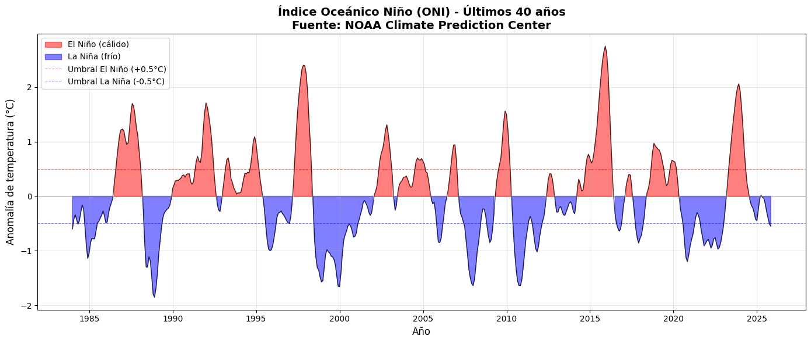

Code
import pandas as pd
import matplotlib.pyplot as plt
import numpy as np
from io import StringIO
import requests
# Descargar datos del ONI de NOAA
url = "https://www.cpc.ncep.noaa.gov/data/indices/oni.ascii.txt"
response = requests.get(url)
data_text = response.text
# Procesar los datos
lines = data_text.strip().split('\n')
# Saltar la primera línea (encabezado)
data_lines = [line.split() for line in lines[1:]]
# Crear DataFrame
df = pd.DataFrame(data_lines, columns=['Season', 'Year', 'Total', 'ANOM'])
df['Year'] = df['Year'].astype(int)
df['ANOM'] = df['ANOM'].astype(float)
# Crear una columna de fecha combinando año y estación
season_to_month = {
'DJF': 1, 'JFM': 2, 'FMA': 3, 'MAM': 4, 'AMJ': 5, 'MJJ': 6,
'JJA': 7, 'JAS': 8, 'ASO': 9, 'SON': 10, 'OND': 11, 'NDJ': 12
}
df['Month'] = df['Season'].map(season_to_month)
df['Date'] = pd.to_datetime(df['Year'].astype(str) + '-' + df['Month'].astype(str) + '-01')
# Filtrar últimos 40 años
current_year = 2024
start_year = current_year - 40
df_filtered = df[df['Year'] >= start_year].copy()
# Crear la gráfica
fig, ax = plt.subplots(figsize=(14, 6))
# Colorear las áreas según El Niño (positivo) y La Niña (negativo)
ax.fill_between(df_filtered['Date'], df_filtered['ANOM'], 0,
where=(df_filtered['ANOM'] > 0),
color='red', alpha=0.5, label='El Niño (cálido)')
ax.fill_between(df_filtered['Date'], df_filtered['ANOM'], 0,
where=(df_filtered['ANOM'] < 0),
color='blue', alpha=0.5, label='La Niña (frío)')
# Línea de tendencia
ax.plot(df_filtered['Date'], df_filtered['ANOM'], color='black', linewidth=1, alpha=0.7)
# Líneas de referencia para umbrales de El Niño/La Niña
ax.axhline(y=0.5, color='red', linestyle='--', linewidth=0.8, alpha=0.5, label='Umbral El Niño (+0.5°C)')
ax.axhline(y=-0.5, color='blue', linestyle='--', linewidth=0.8, alpha=0.5, label='Umbral La Niña (-0.5°C)')
ax.axhline(y=0, color='gray', linestyle='-', linewidth=0.5)
# Etiquetas y título
ax.set_xlabel('Año', fontsize=12)
ax.set_ylabel('Anomalía de temperatura (°C)', fontsize=12)
ax.set_title('Índice Oceánico Niño (ONI) - Últimos 40 años\nFuente: NOAA Climate Prediction Center',
fontsize=14, fontweight='bold')
ax.legend(loc='upper left', fontsize=10)
ax.grid(True, alpha=0.3)
plt.tight_layout()
plt.show()
# Mostrar estadísticas
print(f"\n📊 Estadísticas del ONI ({start_year}-{current_year}):")
print(f"Anomalía máxima (El Niño más fuerte): {df_filtered['ANOM'].max():.2f}°C en {df_filtered[df_filtered['ANOM'] == df_filtered['ANOM'].max()]['Date'].dt.strftime('%Y-%m').values[0]}")
print(f"Anomalía mínima (La Niña más fuerte): {df_filtered['ANOM'].min():.2f}°C en {df_filtered[df_filtered['ANOM'] == df_filtered['ANOM'].min()]['Date'].dt.strftime('%Y-%m').values[0]}")
print(f"Promedio: {df_filtered['ANOM'].mean():.2f}°C")
print(f"Desviación estándar: {df_filtered['ANOM'].std():.2f}°C")
📊 Estadísticas del ONI (1984-2024):
Anomalía máxima (El Niño más fuerte): 2.75°C en 2015-12
Anomalía mínima (La Niña más fuerte): -1.85°C en 1988-12
Promedio: 0.01°C
Desviación estándar: 0.86°C